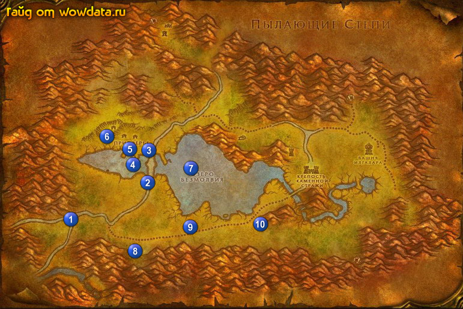

1) Начните <Вторжение гноллов> у стражника по дороге 1 (15, 71).
2) Закончите <Вторжение гноллов> 2 (31, 60), начните <Подсчет врагов>.
3) Откройте пункт полета рядом.
4) Перейдите по мосту, с права начните <Угроза Черной горы>, а слева <Утраченные инструменты>.
5) Игнорируйте <Просьба Элмора> и <Цена подков> 3 (31, 48)
6) Начните <Ожерелье Хилари> 4 (29, 53) в доках
7) Начните <Продажа рыбы> 5 (28, 47) у какогото сарая.
8) Войдите в таверну и начните <Бесплатный обед>, игнорируйте <Засуха> за прилавком.
9) Идите на запад от поселка и начните <Гуляш по-красногорски> 6 (23, 44) в доме.
10) Идите фармить [Рыло большого жутевепря] западнее этого дома, (опасайтесь Грубобрюх ) для
<Гуляш по-красногорски>.
11) Заодно делайте <Утраченные инструменты> 7 (41, 54), тут же делайте <Продажа рыбы>, убивая мурлоков, под водой поищите ожерелье (я его находил обычно с левой стороны если стоять лицом к городу, под камнями, в деревьях и т.д. разумеется под водой) для <Ожерелье Хилари>. И оставте 8 [Плавник мурлока] для следующих квестов.
12) Закончите <Утраченные инструменты> 3 (32, 49), начните <Мост Безмолвия>.
13) Закончите <Ожерелье Хилари> в доках.
14) Закончите <Продажа рыбы> 5 (28, 47). Вы должны вернуться к нему на 20 лвл взять и тут же закончить квест если у вас есть 8 [Плавник мурлока].
15) Закончите <Бесплатный обед> 1 (14, 70), начните <Визит к травнице>.
16) Бейте пауков для <Гуляш по-красногорски> около точек 1 (14, 70) и 8 (29, 83).
17) Делайте <Подсчет врагов> 8 (29, 83) и 9 (41, 73).
18) Бейте кондоров 10 (57, 73) для <Гуляш по-красногорски>.
19) Закончите <Подсчет врагов> около пункт полета.
20) Начните <Мурлоки-браконьеры> 5 (28, 47).
21) Остановитесь у домика на западе Приозерье, закончите <Визит к травнице> начните
<Доставка нарциссов>.
22) Идите в следующий дом и закончите <Гуляш по-красногорски>.
23) Идите в таверну и закончите <Доставка нарциссов>.
24) Идите бить мурлоков чтобы доделать <Мурлоки-браконьеры>.
25) Бейте мобов к северу от Lakeshire для <Мост Безмолвия>.
26) Закончите <Мост Безмолвия> у моста.
27) Закончите <Мурлоки-браконьеры> 5 (28, 47).
28) Вы уже должны быть 20 лвл, так что вернитесь по камню в Аубердин.